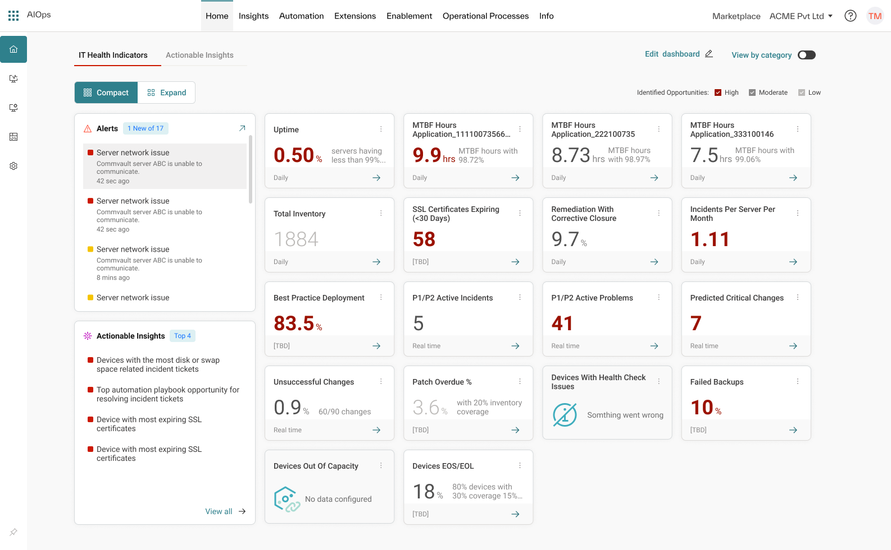

07 — Selected work
Enterprise IT Operations · DevOps · AI-Driven Platforms
Shipped. Not shelved.
Every project below starts the same way — research and problem framing before a single screen.

Intelligent DSRR — AI-Driven Release Readiness
An AI-driven, intelligent candidacy and release-readiness system for enterprise DevSecOps, designed so people could trust and act on its signals.
Role: UX lead · research → workflow design → dashboard UX

Integrated AIOps (F1 Dashboard)
Integrated operational experience surfacing complex application and service signals.
Role: UX design · IA and workflow design

Business Service Insights
A recovery order concept for enterprise workloads — sequencing dependency-aware recovery instead of bringing everything back online at once.
Role: UX design
04
Consolidated Notification Services
Consolidating fragmented notification workflows into one coherent experience.
Role: UX design
05
Catalog Bundles
Enterprise catalog bundle configuration and workflow design.
Role: UX design
06
Actionable Insights
Turning dense operational data into insights people can act on.
Role: UX design